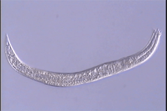
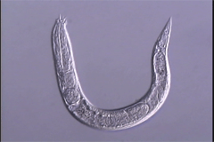

Cervidellus capraeolus
Virtual specimen prepared by Melissa Yoder, Luis Mundo and Irma T. De Ley
Click on the appropriate thumbnail image to select the relevant specimen.

3277 Adult Female

3278 Adult Female
copyright 2002